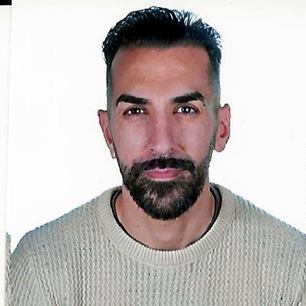

Francisco J. Hidalgo Ruiz
ES
EN
PDF

Francisco Javier Hidalgo Ruiz
Senior Backend Developer
Granada, España
franjhr@gmail.com
647 519 804
linkedin.com/in/franjhr
Perfil profesional
Experiencia profesional
Formación
Aptitudes técnicas
Idiomas